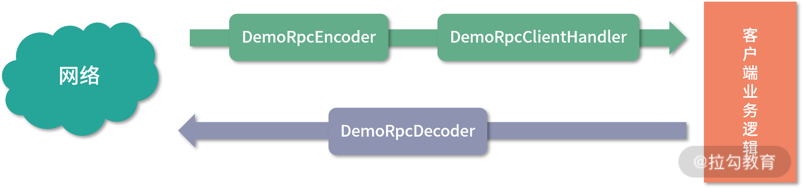

- 00 开篇词 深入掌握 Dubbo 原理与实现，提升你的职场竞争力.md
- 01 Dubbo 源码环境搭建：千里之行，始于足下.md
- 02 Dubbo 的配置总线：抓住 URL，就理解了半个 Dubbo.md
- 03 Dubbo SPI 精析，接口实现两极反转（上）.md
- 04 Dubbo SPI 精析，接口实现两极反转（下）.md
- 05 海量定时任务，一个时间轮搞定.md
- 06 ZooKeeper 与 Curator，求你别用 ZkClient 了（上）.md
- 07 ZooKeeper 与 Curator，求你别用 ZkClient 了（下）.md
- 08 代理模式与常见实现.md
- 09 Netty 入门，用它做网络编程都说好（上）.md
- 10 Netty 入门，用它做网络编程都说好（下）.md
- 11 简易版 RPC 框架实现（上）.md
- 12 简易版 RPC 框架实现（下）.md
- 13 本地缓存：降低 ZooKeeper 压力的一个常用手段.md
- 14 重试机制是网络操作的基本保证.md
- 15 ZooKeeper 注册中心实现，官方推荐注册中心实践.md
- 16 Dubbo Serialize 层：多种序列化算法，总有一款适合你.md
- 17 Dubbo Remoting 层核心接口分析：这居然是一套兼容所有 NIO 框架的设计？.md
- 18 Buffer 缓冲区：我们不生产数据，我们只是数据的搬运工.md
- 19 Transporter 层核心实现：编解码与线程模型一文打尽（上）.md
- 20 Transporter 层核心实现：编解码与线程模型一文打尽（下）.md
- 21 Exchange 层剖析：彻底搞懂 Request-Response 模型（上）.md
- 22 Exchange 层剖析：彻底搞懂 Request-Response 模型（下）.md
- 23 核心接口介绍，RPC 层骨架梳理.md
- 24 从 Protocol 起手，看服务暴露和服务引用的全流程（上）.md
- 25 从 Protocol 起手，看服务暴露和服务引用的全流程（下）.md
- 26 加餐：直击 Dubbo “心脏”，带你一起探秘 Invoker（上）.md
- 27 加餐：直击 Dubbo “心脏”，带你一起探秘 Invoker（下）.md
- 28 复杂问题简单化，代理帮你隐藏了多少底层细节？.md
- 29 加餐：HTTP 协议 + JSON-RPC，Dubbo 跨语言就是如此简单.md
- 30 Filter 接口，扩展 Dubbo 框架的常用手段指北.md
- 31 加餐：深潜 Directory 实现，探秘服务目录玄机.md
- 32 路由机制：请求到底怎么走，它说了算（上）.md
- 33 路由机制：请求到底怎么走，它说了算（下）.md
- 34 加餐：初探 Dubbo 动态配置的那些事儿.md
- 35 负载均衡：公平公正物尽其用的负载均衡策略，这里都有（上）.md
- 36 负载均衡：公平公正物尽其用的负载均衡策略，这里都有（下）.md
- 37 集群容错：一个好汉三个帮（上）.md
- 38 集群容错：一个好汉三个帮（下）.md
- 39 加餐：多个返回值不用怕，Merger 合并器来帮忙.md
- 40 加餐：模拟远程调用，Mock 机制帮你搞定.md
- 41 加餐：一键通关服务发布全流程.md
- 42 加餐：服务引用流程全解析.md
- 43 服务自省设计方案：新版本新方案.md
- 44 元数据方案深度剖析，如何避免注册中心数据量膨胀？.md
- 45 加餐：深入服务自省方案中的服务发布订阅（上）.md
- 46 加餐：深入服务自省方案中的服务发布订阅（下）.md
- 47 配置中心设计与实现：集中化配置 and 本地化配置，我都要（上）.md
- 48 配置中心设计与实现：集中化配置 and 本地化配置，我都要（下）.md
- 49 结束语 认真学习，缩小差距.md
12 简易版 RPC 框架实现（下）
在上一课时中，我们介绍了整个简易 RPC 框架项目的结构和工作原理，并且介绍了简易 RPC 框架底层的协议结构、序列化/反序列化实现、压缩实现以及编解码器的具体实现。本课时我们将继续自底向上，介绍简易 RPC 框架的剩余部分实现。
transport 相关实现
正如前文介绍 Netty 线程模型的时候提到，我们不能在 Netty 的 I/O 线程中执行耗时的业务逻辑。在 Demo RPC 框架的 Server 端接收到请求时，首先会通过上面介绍的 DemoRpcDecoder 反序列化得到请求消息，之后我们会通过一个自定义的 ChannelHandler（DemoRpcServerHandler）将请求提交给业务线程池进行处理。
在 Demo RPC 框架的 Client 端接收到响应消息的时候，也是先通过 DemoRpcDecoder 反序列化得到响应消息，之后通过一个自定义的 ChannelHandler（DemoRpcClientHandler）将响应返回给上层业务。
DemoRpcServerHandler 和 DemoRpcClientHandler 都继承自 SimpleChannelInboundHandler，如下图所示：

DemoRpcClientHandler 和 DemoRpcServerHandler 的继承关系图
下面我们就来看一下这两个自定义的 ChannelHandler 实现：
public class DemoRpcServerHandler extends
SimpleChannelInboundHandler<Message<Request>> {
// 业务线程池
static Executor executor = Executors.newCachedThreadPool();
protected void channelRead0(final ChannelHandlerContext ctx,
Message<Request> message) throws Exception {
byte extraInfo = message.getHeader().getExtraInfo();
if (Constants.isHeartBeat(extraInfo)) { // 心跳消息，直接返回即可
channelHandlerContext.writeAndFlush(message);
return;
}
// 非心跳消息，直接封装成Runnable提交到业务线程
executor.execute(new InvokeRunnable(message, cxt));
}
}
public class DemoRpcClientHandler extends
SimpleChannelInboundHandler<Message<Response>> {
protected void channelRead0(ChannelHandlerContext ctx,
Message<Response> message) throws Exception {
NettyResponseFuture responseFuture =
Connection.IN_FLIGHT_REQUEST_MAP
.remove(message.getHeader().getMessageId());
Response response = message.getContent();
// 心跳消息特殊处理
if (response == null && Constants.isHeartBeat(
message.getHeader().getExtraInfo())) {
response = new Response();
response.setCode(Constants.HEARTBEAT_CODE);
}
responseFuture.getPromise().setSuccess(response);
}
}
注意，这里有两个点需要特别说明一下。一个点是 Server 端的 InvokeRunnable，在这个 Runnable 任务中会根据请求的 serviceName、methodName 以及参数信息，调用相应的方法：
class InvokeRunnable implements Runnable {
private ChannelHandlerContext ctx;
private Message<Request> message;
public void run() {
Response response = new Response();
Object result = null;
try {
Request request = message.getContent();
String serviceName = request.getServiceName();
// 这里提供BeanManager对所有业务Bean进行管理，其底层在内存中维护了
// 一个业务Bean实例的集合。感兴趣的同学可以尝试接入Spring等容器管
// 理业务Bean
Object bean = BeanManager.getBean(serviceName);
// 下面通过反射调用Bean中的相应方法
Method method = bean.getClass().getMethod(
request.getMethodName(), request.getArgTypes());
result = method.invoke(bean, request.getArgs());
} catch (Exception e) { // 省略异常处理
} finally {
}
response.setResult(result); // 设置响应结果
// 将响应消息返回给客户端
ctx.writeAndFlush(new Message(message.getHeader(), response));
}
}
另一个点是 Client 端的 Connection，它是用来暂存已发送出去但未得到响应的请求，这样，在响应返回时，就可以查找到相应的请求以及 Future，从而将响应结果返回给上层业务逻辑，具体实现如下：
public class Connection implements Closeable {
private static AtomicLong ID_GENERATOR = new AtomicLong(0);
public static Map<Long, NettyResponseFuture<Response>>
IN_FLIGHT_REQUEST_MAP = new ConcurrentHashMap<>();
private ChannelFuture future;
private AtomicBoolean isConnected = new AtomicBoolean();
public Connection(ChannelFuture future, boolean isConnected) {
this.future = future;
this.isConnected.set(isConnected);
}
public NettyResponseFuture<Response> request(Message<Request> message, long timeOut) {
// 生成并设置消息ID
long messageId = ID_GENERATOR.incrementAndGet();
message.getHeader().setMessageId(messageId);
// 创建消息关联的Future
NettyResponseFuture responseFuture = new NettyResponseFuture(System.currentTimeMillis(),
timeOut, message, future.channel(), new DefaultPromise(new DefaultEventLoop()));
// 将消息ID和关联的Future记录到IN_FLIGHT_REQUEST_MAP集合中
IN_FLIGHT_REQUEST_MAP.put(messageId, responseFuture);
try {
future.channel().writeAndFlush(message); // 发送请求
} catch (Exception e) {
// 发送请求异常时，删除对应的Future
IN_FLIGHT_REQUEST_MAP.remove(messageId);
throw e;
}
return responseFuture;
}
// 省略getter/setter以及close()方法
}
我们可以看到，Connection 中没有定时清理 IN_FLIGHT_REQUEST_MAP 集合的操作，在无法正常获取响应的时候，就会导致 IN_FLIGHT_REQUEST_MAP 不断膨胀，最终 OOM。你也可以添加一个时间轮定时器，定时清理过期的请求消息，这里我们就不再展开讲述了。
完成自定义 ChannelHandler 的编写之后，我们需要再定义两个类—— DemoRpcClient 和 DemoRpcServer，分别作为 Client 和 Server 的启动入口。DemoRpcClient 的实现如下：
public class DemoRpcClient implements Closeable {
protected Bootstrap clientBootstrap;
protected EventLoopGroup group;
private String host;
private int port;
public DemoRpcClient(String host, int port) throws Exception {
this.host = host;
this.port = port;
clientBootstrap = new Bootstrap();
// 创建并配置客户端Bootstrap
group = NettyEventLoopFactory.eventLoopGroup(
Constants.DEFAULT_IO_THREADS, "NettyClientWorker");
clientBootstrap.group(group)
.option(ChannelOption.TCP_NODELAY, true)
.option(ChannelOption.SO_KEEPALIVE, true)
.channel(NioSocketChannel.class)
// 指定ChannelHandler的顺序
.handler(new ChannelInitializer<SocketChannel>() {
protected void initChannel(SocketChannel ch) {
ch.pipeline().addLast("demo-rpc-encoder",
new DemoRpcEncoder());
ch.pipeline().addLast("demo-rpc-decoder",
new DemoRpcDecoder());
ch.pipeline().addLast("client-handler",
new DemoRpcClientHandler());
}
});
}
public ChannelFuture connect() { // 连接指定的地址和端口
ChannelFuture connect = clientBootstrap.connect(host, port);
connect.awaitUninterruptibly();
return connect;
}
public void close() {
group.shutdownGracefully();
}
}
通过 DemoRpcClient 的代码我们可以看到其 ChannelHandler 的执行顺序如下：

客户端 ChannelHandler 结构图
另外，在创建EventLoopGroup时并没有直接使用NioEventLoopGroup，而是在 NettyEventLoopFactory 中根据当前操作系统进行选择，对于 Linux 系统，会使用 EpollEventLoopGroup，其他系统则使用 NioEventLoopGroup。
接下来我们再看DemoRpcServer 的具体实现：
public class DemoRpcServer {
private EventLoopGroup bossGroup;
private EventLoopGroup workerGroup;
private ServerBootstrap serverBootstrap;
private Channel channel;
protected int port;
public DemoRpcServer(int port) throws InterruptedException {
this.port = port;
// 创建boss和worker两个EventLoopGroup，注意一些小细节，
// workerGroup 是按照中的线程数是按照 CPU 核数计算得到的，
bossGroup = NettyEventLoopFactory.eventLoopGroup(1, "boos");
workerGroup = NettyEventLoopFactory.eventLoopGroup(
Math.min(Runtime.getRuntime().availableProcessors() + 1,
32), "worker");
serverBootstrap = new ServerBootstrap().group(bossGroup,
workerGroup).channel(NioServerSocketChannel.class)
.option(ChannelOption.SO_REUSEADDR, Boolean.TRUE)
.childOption(ChannelOption.TCP_NODELAY, Boolean.TRUE)
.handler(new LoggingHandler(LogLevel.INFO))
.childHandler(new ChannelInitializer<SocketChannel>()
{ // 指定每个Channel上注册的ChannelHandler以及顺序
protected void initChannel(SocketChannel ch) {
ch.pipeline().addLast("demp-rpc-decoder",
new DemoRpcDecoder());
ch.pipeline().addLast("demo-rpc-encoder",
new DemoRpcEncoder());
ch.pipeline().addLast("server-handler",
new DemoRpcServerHandler());
}
});
}
public ChannelFuture start() throws InterruptedException {
ChannelFuture channelFuture = serverBootstrap.bind(port);
channel = channelFuture.channel();
channel.closeFuture();
return channelFuture;
}
}
通过对 DemoRpcServer 实现的分析，我们可以知道每个 Channel 上的 ChannelHandler 顺序如下：

服务端 ChannelHandler 结构图
registry 相关实现
介绍完客户端和服务端的通信之后，我们再来看简易 RPC 框架的另一个基础能力——服务注册与服务发现能力，对应 demo-rpc 项目源码中的 registry 包。
registry 包主要是依赖 Apache Curator 实现了一个简易版本的 ZooKeeper 客户端，并基于 ZooKeeper 实现了注册中心最基本的两个功能：Provider 注册以及 Consumer 订阅。
这里我们先定义一个 Registry 接口，其中提供了注册以及查询服务实例的方法，如下图所示：

ZooKeeperRegistry 是基于 curator-x-discovery 对 Registry 接口的实现类型，其中封装了之前课时介绍的 ServiceDiscovery，并在其上添加了 ServiceCache 缓存提高查询效率。ZooKeeperRegistry 的具体实现如下：
public class ZookeeperRegistry<T> implements Registry<T> {
private InstanceSerializer serializer =
new JsonInstanceSerializer<>(ServerInfo.class);
private ServiceDiscovery<T> serviceDiscovery;
private ServiceCache<T> serviceCache;
private String address = "localhost:2181";
public void start() throws Exception {
String root = "/demo/rpc";
// 初始化CuratorFramework
CuratorFramework client = CuratorFrameworkFactory
.newClient(address, new ExponentialBackoffRetry(1000, 3));
client.start(); // 启动Curator客户端
client.blockUntilConnected(); // 阻塞当前线程，等待连接成
client.createContainers(root);
// 初始化ServiceDiscovery
serviceDiscovery = ServiceDiscoveryBuilder
.builder(ServerInfo.class)
.client(client).basePath(root)
.serializer(serializer)
.build();
serviceDiscovery.start(); // 启动ServiceDiscovery
// 创建ServiceCache，监Zookeeper相应节点的变化，也方便后续的读取
serviceCache = serviceDiscovery.serviceCacheBuilder()
.name(root)
.build();
serviceCache.start(); // 启动ServiceCache
}
@Override
public void registerService(ServiceInstance<T> service)
throws Exception {
serviceDiscovery.registerService(service);
}
@Override
public void unregisterService(ServiceInstance service)
throws Exception {
serviceDiscovery.unregisterService(service);
}
@Override
public List<ServiceInstance<T>> queryForInstances(
String name) throws Exception {
// 直接根据name进行过滤ServiceCache中的缓存数据
return serviceCache.getInstances().stream()
.filter(s -> s.getName().equals(name))
.collect(Collectors.toList());
}
}
通过对 ZooKeeperRegistry的分析可以得知，它是基于 Curator 中的 ServiceDiscovery 组件与 ZooKeeper 进行交互的，并且对 Registry 接口的实现也是通过直接调用 ServiceDiscovery 的相关方法实现的。在查询时，直接读取 ServiceCache 中的缓存数据，ServiceCache 底层在本地维护了一个 ConcurrentHashMap 缓存，通过 PathChildrenCache 监听 ZooKeeper 中各个子节点的变化，同步更新本地缓存。这里我们简单看一下 ServiceCache 的核心实现：
public class ServiceCacheImpl<T> implements ServiceCache<T>,
PathChildrenCacheListener{//实现PathChildrenCacheListener接口
// 关联的ServiceDiscovery实例
private final ServiceDiscoveryImpl<T> discovery;
// 底层的PathChildrenCache，用于监听子节点的变化
private final PathChildrenCache cache;
// 本地缓存
private final ConcurrentMap<String, ServiceInstance<T>> instances
= Maps.newConcurrentMap();
public List<ServiceInstance<T>> getInstances(){ // 返回本地缓存内容
return Lists.newArrayList(instances.values());
}
public void childEvent(CuratorFramework client,
PathChildrenCacheEvent event) throws Exception{
switch(event.getType()){
case CHILD_ADDED:
case CHILD_UPDATED:{
addInstance(event.getData(), false); // 更新本地缓存
notifyListeners = true;
break;
}
case CHILD_REMOVED:{ // 更新本地缓存
instances.remove(instanceIdFromData(event.getData()));
notifyListeners = true;
break;
}
}
... // 通知ServiceCache上注册的监听器
}
}
proxy 相关实现
在简易版 Demo RPC 框架中，Proxy 主要是为 Client 端创建一个代理，帮助客户端程序屏蔽底层的网络操作以及与注册中心之间的交互。
简易版 Demo RPC 使用 JDK 动态代理的方式生成代理，这里需要编写一个 InvocationHandler 接口的实现，即下面的 DemoRpcProxy。其中有两个核心方法：一个是 newInstance() 方法，用于生成代理对象；另一个是 invoke() 方法，当调用目标对象的时候，会执行 invoke() 方法中的代理逻辑。
下面是 DemoRpcProxy 的具体实现：
public class DemoRpcProxy implements InvocationHandler {
// 需要代理的服务(接口)名称
private String serviceName;
// 用于与Zookeeper交互，其中自带缓存
private Registry<ServerInfo> registry;
public DemoRpcProxy(String serviceName, Registry<ServerInfo>
registry) throws Exception { // 初始化上述两个字段
this.serviceName = serviceName;
this.registry = registry;
}
public static <T> T newInstance(Class<T> clazz,
Registry<ServerInfo> registry) throws Exception {
// 创建代理对象
return (T) Proxy.newProxyInstance(Thread.currentThread()
.getContextClassLoader(), new Class[]{clazz},
new DemoRpcProxy(clazz.getName(), registry));
}
@Override
public Object invoke(Object proxy, Method method, Object[] args)
throws Throwable {
// 从Zookeeper缓存中获取可用的Server地址,并随机从中选择一个
List<ServiceInstance<ServerInfo>> serviceInstances =
registry.queryForInstances(serviceName);
ServiceInstance<ServerInfo> serviceInstance = serviceInstances
.get(ThreadLocalRandom.current()
.nextInt(serviceInstances.size()));
// 创建请求消息，然后调用remoteCall()方法请求上面选定的Server端
String methodName = method.getName();
Header header =new Header(MAGIC, VERSION_1...);
Message<Request> message = new Message(header,
new Request(serviceName, methodName, args));
return remoteCall(serviceInstance.getPayload(), message);
}
protected Object remoteCall(ServerInfo serverInfo,
Message message) throws Exception {
if (serverInfo == null) {
throw new RuntimeException("get available server error");
}
// 创建DemoRpcClient连接指定的Server端
DemoRpcClient demoRpcClient = new DemoRpcClient(
serverInfo.getHost(), serverInfo.getPort());
ChannelFuture channelFuture = demoRpcClient.connect()
.awaitUninterruptibly();
// 创建对应的Connection对象，并发送请求
Connection connection = new Connection(channelFuture, true);
NettyResponseFuture responseFuture =
connection.request(message, Constants.DEFAULT_TIMEOUT);
// 等待请求对应的响应
return responseFuture.getPromise().get(
Constants.DEFAULT_TIMEOUT, TimeUnit.MILLISECONDS);
}
}
从 DemoRpcProxy 的实现中我们可以看到，它依赖了 ServiceInstanceCache 获取ZooKeeper 中注册的 Server 端地址，同时依赖了 DemoRpcClient 与Server 端进行通信，上层调用方拿到这个代理对象后，就可以像调用本地方法一样进行调用，而不再关心底层网络通信和服务发现的细节。当然，这个简易版 DemoRpcProxy 的实现还有很多可以优化的地方，例如：
- 缓存 DemoRpcClient 客户端对象以及相应的 Connection 对象，不必每次进行创建。
- 可以添加失败重试机制，在请求出现超时的时候，进行重试。
- 可以添加更加复杂和灵活的负载均衡机制，例如，根据 Hash 值散列进行负载均衡、根据节点 load 情况进行负载均衡等。
你若感兴趣的话可以尝试进行扩展，以实现一个更加完善的代理层。
使用方接入
介绍完 Demo RPC 的核心实现之后，下面我们讲解下Demo RPC 框架的使用方式。这里涉及Consumer、DemoServiceImp、Provider三个类以及 DemoService 业务接口。

使用接入的相关类
首先，我们定义DemoService 接口作为业务 Server 接口，具体定义如下：
public interface DemoService {
String sayHello(String param);
}
DemoServiceImpl对 DemoService 接口的实现也非常简单，如下所示，将参数做简单修改后返回：
public class DemoServiceImpl implements DemoService {
public String sayHello(String param) {
return "hello:" + param;
}
}
了解完相应的业务接口和实现之后，我们再来看Provider的实现，它的角色类似于 Dubbo 中的 Provider，其会创建 DemoServiceImpl 这个业务 Bean 并将自身的地址信息暴露出去，如下所示：
public class Provider {
public static void main(String[] args) throws Exception {
// 创建DemoServiceImpl，并注册到BeanManager中
BeanManager.registerBean("demoService",
new DemoServiceImpl());
// 创建ZookeeperRegistry，并将Provider的地址信息封装成ServerInfo
// 对象注册到Zookeeper
ZookeeperRegistry<ServerInfo> discovery =
new ZookeeperRegistry<>();
discovery.start();
ServerInfo serverInfo = new ServerInfo("127.0.0.1", 20880);
discovery.registerService(
ServiceInstance.<ServerInfo>builder().name("demoService")
.payload(serverInfo).build());
// 启动DemoRpcServer，等待Client的请求
DemoRpcServer rpcServer = new DemoRpcServer(20880);
rpcServer.start();
}
}
最后是Consumer，它类似于 Dubbo 中的 Consumer，其会订阅 Provider 地址信息，然后根据这些信息选择一个 Provider 建立连接，发送请求并得到响应，这些过程在 Proxy 中都予以了封装，那Consumer 的实现就很简单了，可参考如下示例代码：
public class Consumer {
public static void main(String[] args) throws Exception {
// 创建ZookeeperRegistr对象
ZookeeperRegistry<ServerInfo> discovery = new ZookeeperRegistry<>();
// 创建代理对象，通过代理调用远端Server
DemoService demoService = DemoRpcProxy.newInstance(DemoService.class, discovery);
// 调用sayHello()方法，并输出结果
String result = demoService.sayHello("hello");
System.out.println(result);
}
}
总结
本课时我们首先介绍了简易 RPC 框架中的transport 包，它在上一课时介绍的编解码器基础之上，实现了服务端和客户端的通信能力。之后讲解了registry 包如何实现与 ZooKeeper 的交互，完善了简易 RPC 框架的服务注册与服务发现的能力。接下来又分析了proxy 包的实现，其中通过 JDK 动态代理的方式，帮接入方屏蔽了底层网络通信的复杂性。最后，我们编写了一个简单的 DemoService 业务接口，以及相应的 Provider 和 Consumer 接入简易 RPC 框架。
在本课时最后，留给你一个小问题：在 transport 中创建 EventLoopGroup 的时候，为什么针对 Linux 系统使用的 EventLoopGroup会有所不同呢？期待你的留言。
简易版 RPC 框架 Demo 的链接：https://github.com/xxxlxy2008/demo-prc 。